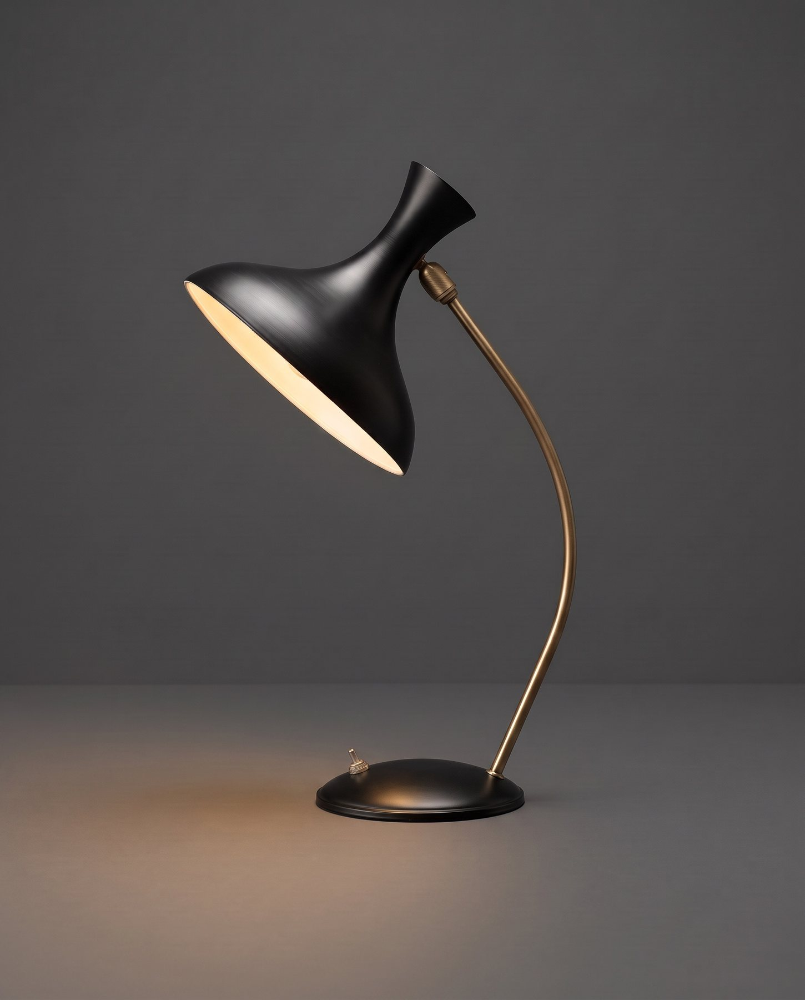
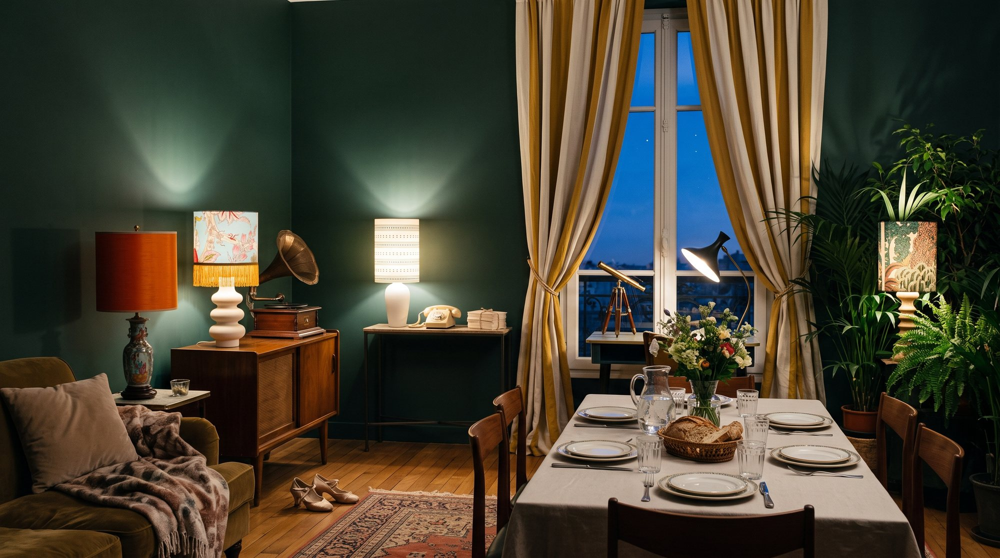

Accueil / Lampes
Les lampes
(14) pièces uniques


Alizée
Canopée


Lulu
Guinguette


Dori
Morse


Elsa
Mandarine


Melville
Black


Carol
Jouy


Miss
Flower


Géraldine
Pistache


Léa
Raphia


Bob
Longcou


Daisy
Bell


Amin
Boubacar


Jelly
Bell


Marcel
Trapp

Collection
Il est 12 h, Miss Flower
Pièce onirique en trois actes.
Un mardi de mai, le soleil a décidé de se coucher à 12 h. À Midiminuit, personne ou presque ne s'en est inquiété : on a sorti les lampes et la fête a commencé. La danseuse a ouvert le bal. La télégraphiste a invité tous les villages voisins. Le guetteur a compté les étoiles du déjeuner. Le soleil dormait comme un bienheureux. Mais où était Miss Flower ?
Demandez le programme !
Les pièces qui arrivent à l'atelier et les coulisses de leur seconde vie, dans votre boîte aux lettres.